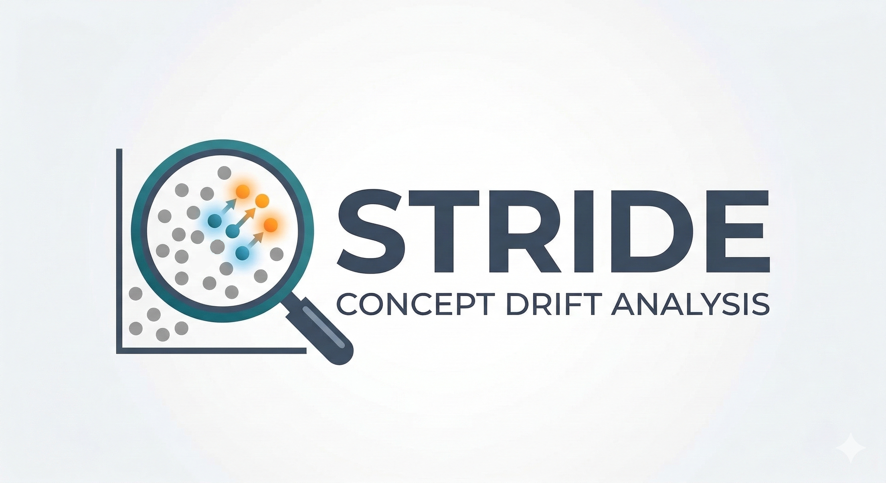
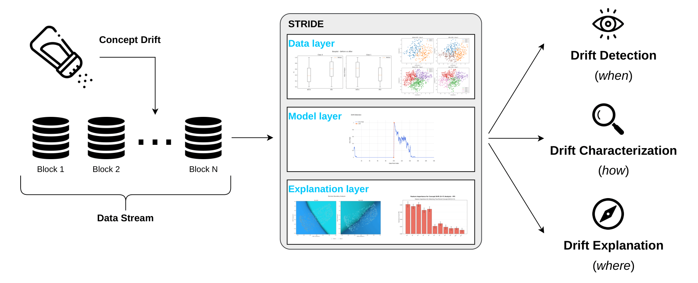

STReam Insight &
Drift
Explanation
A comprehensive Python toolkit for concept drift detection and explanation. STRIDE provides a simultaneous, real-time analysis of streaming data across statistical, model performance, and explainability layers to reveal not just when drift occurs, but how and where it affects your models.

Why Choose STRIDE?
Designed to assist both scientific researchers evaluating new drift dynamics and data analysts monitoring production ML systems. By bringing three analytical levels together in one dashboard, users are empowered to perform complex, on-the-fly forensic analysis of their data streams.
Unified Diagnostics
Instead of isolated detectors, STRIDE integrates Data, Model, and Explanation views into a cohesive, tab-based workflow. Users can seamlessly transition between statistical metrics and xAI boundaries for an exact point in time.
Beyond Detection
Standard drift detectors only indicate when a model fails. STRIDE bridges this critical gap, utilizing localized decision boundary mapping and prototype-based clustering to pinpoint exactly which specific regions of the feature space transformed.
Interactive Exploration
By shifting from rigid pipeline alerts to a reactive dashboard, analysts can dynamically switch datasets, tweak base models, and compute on-demand explanations, deeply interacting with the changing phenomena.
Interactive Demo
Follow along as we track a generated Hyperplane drift scenario through the three analytical layers.
The Three-Layer Architecture
STRIDE orchestrates a diverse set of analytical methods across three functional layers.

1. The Data Layer (Statistical & Clustering)
Monitors the input distribution independent of the model. Employs descriptive statistics, unsupervised tests (KS, AD), probability divergences (Wasserstein), and X-means clustering with the Hungarian algorithm.
2. The Model Layer (Performance Triggers)
Tracks predictive performance using standard drift detectors, including DDM and its extensions (available via the River library backend).
3. The Explanation Layer (xAI)
Bridges detection and understanding using Supervised Decision Boundary Maps, HDBSCAN for prototype analysis, and dual feature importance analysis (predictive vs. drift indicator value).
Getting Started
To get a local copy up and running, follow these simple steps.
Prerequisites
- Python 3.10-3.12
- pip
Installation
Install via pip (Recommended)
Optional extras: pip install "stride-xai[all]" for all features or pip install "stride-xai[dashboard]" for the Streamlit UI.
Python API Usage
Use STRIDE directly within your Python scripts, notebooks, or evaluation pipelines:
from stride.xai.stats import StatisticalTestsDriftDetector, StatisticalTestType
from stride.models import RandomForestModel
# 1. Generate synthetic stream with drift
dataset = HyperplaneDriftDataset()
X, y = dataset.generate(
n_samples_before=1000, n_samples_after=1000,
n_features=5, n_drift_features=2,
drift_width=100, random_seed=42
)
# 2. Partition reference and detection windows
X_ref, y_ref = X.iloc[:1000], y.iloc[:1000]
X_det, y_det = X.iloc[1000:], y.iloc[1000:]
# 3. Fit classifier and detect concept drift
model = RandomForestModel()
model.fit(X_ref, y_ref)
detector = StatisticalTestsDriftDetector(X_ref, y_ref, X_det, y_det)
has_drift = detector.detect(StatisticalTestType.KolmogorovSmirnov)
print(f"Drift detected: {has_drift}")
Running the Dashboard
You can explore streams interactively using the built-in Streamlit dashboard.
git clone https://github.com/KubaCzech/STRIDE.git
cd STRIDE
pip install -e ".[dashboard]"
streamlit run dashboard/app.py
Or try it directly without installing anything via our hosted Live Demo.